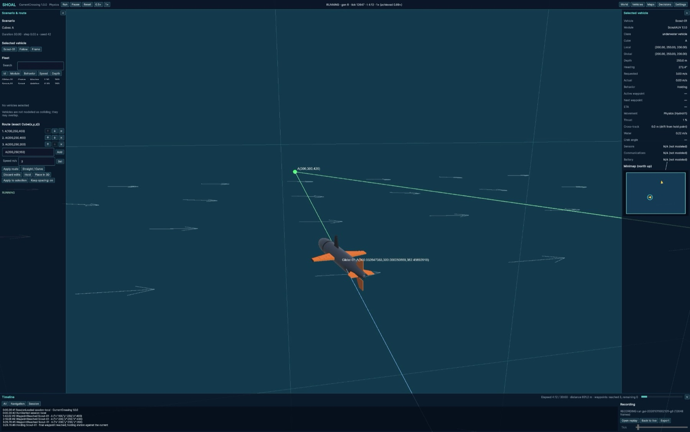
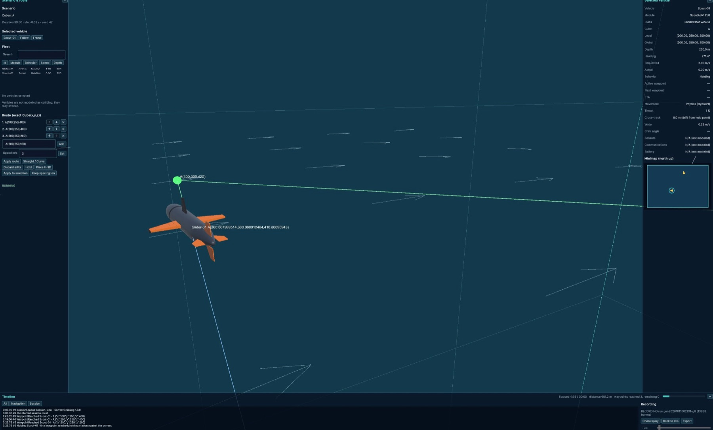
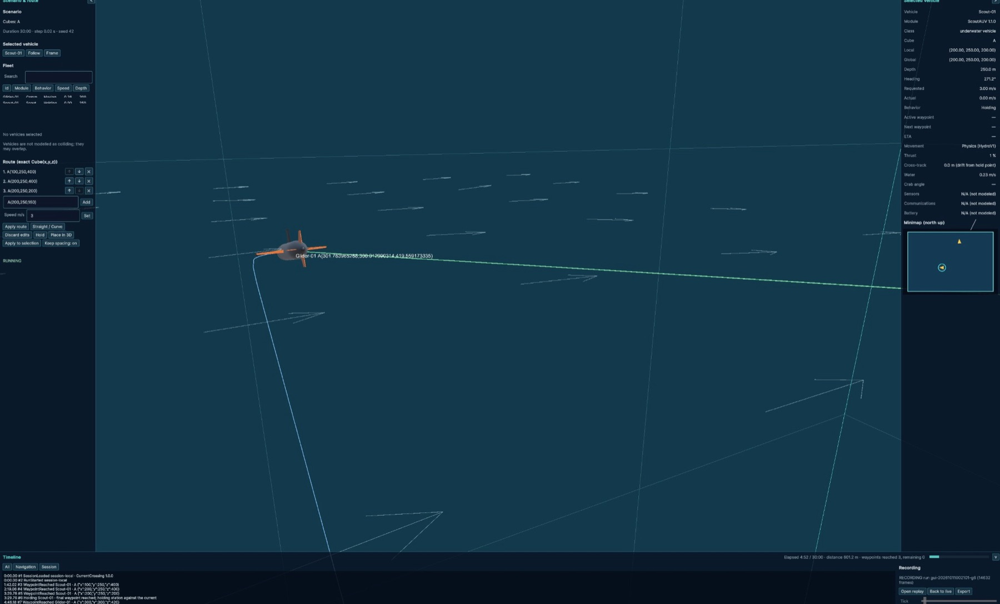
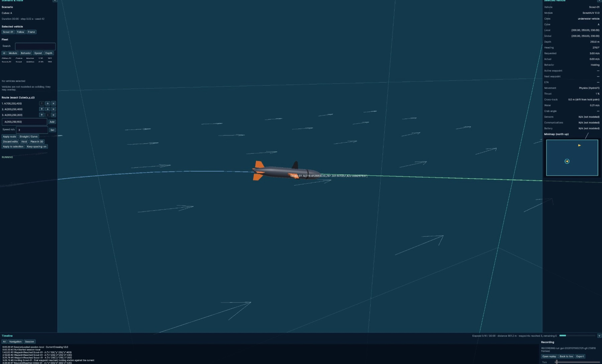

Featured · Simulation · Autonomy · Unity / C# / Python
SHOAL
A modular, physics-aware 3D simulation environment for autonomous maritime vehicles and heterogeneous swarms: a digital ocean laboratory for building vehicles and worlds, running autonomy experiments, and recording, replaying, and analyzing the results.
Demo
Screenshots: current-crossing run
Four frames from one live run of the CurrentCrossing scenario (30-minute duration, 0.02 s step, seed 42), showing a glider navigating to waypoint A(300,300,420) through the modeled current while a scout holds station. The panels show the route editor, fleet table, per-vehicle telemetry, minimap, event timeline, and frame-by-frame recording status.








Problem
I designed a swarm protocol: a written set of rules for how a group of autonomous underwater vehicles should act in operations, covering safety, command and succession, communication, rendezvous and relay, and loss and recovery. I wanted to know whether that protocol could actually be run and scored in simulation, and I did not want to depend on paid simulation software to find out. SHOAL is my own project, built to explore that question.
What I did
Specified and built SHOAL: reusable vehicle modules and standardized map-cube modules assemble into one continuous world. Behaviors produce waypoint routes and requested speeds, vehicle-specific controllers and a physics model execute them, and authoritative simulation state drives the 3D view, telemetry, recording, and replay.
My role: I wrote the system charter and the swarm protocol, set the requirements (free software only, the scope of the physics, the scoring weights), approved each of the 35 build blueprints, and verified the results on a separate machine. AI coding agents (Claude) implemented the blueprints under my direction.
How
- Specification first: a charter of over 100 design sections, a swarm protocol, and blueprints BP-00 to BP-34, with every change recorded in an amendment ledger.
- Stack: Unity 6.3 LTS with C# for the simulation (about 17,800 lines), URP and UI Toolkit for the 3D view and dashboard, and Python (about 22,000 lines) for orchestration and verification tools. Free software only, by requirement.
- World model: standardized cubes addressed as
CubeName(x,y,z), resolved into one global space, with modeled ocean currents. - Physics (HydroV1): my own simple force-based model, written in C# with no third-party physics engine. Each 0.02 s tick applies thrust along the vehicle, per-axis linear and quadratic drag, net buoyancy, and inertia with an added-mass factor, with rate-limited turning. Water velocity enters as relative velocity, so currents act on the vehicle. It integrates with semi-implicit Euler (4 substeps, double precision, no randomness), so runs are deterministic. Waves, collisions, thruster detail, and battery are not modeled. The force forms are standard marine-vehicle dynamics; I did not work from a specific cited source. Coefficients are plausible placeholders, not calibrated to real hardware.
- Vehicles: modular definitions including a Scout AUV, a Command Glider and a surface vessel.
- Operator interface: route editor with exact 3D waypoints and speeds, fleet table, follow cameras, telemetry panel, minimap, and an event timeline.
- Recording and replay: every run is recorded frame by frame and can be replayed at multiple speeds in a fresh process.
- Mission scoring (CapabilityCheck): a mission with 2 Command Gliders and 3 Scout AUVs, run in four variations (nominal, a second seed, acoustic blackout, and loss of the lead). A conformance checker tests each run against the swarm protocol rule by rule, using ground truth the vehicles never see. Any violation scores zero. Otherwise the score is out of 100: mission completion 40, fleet preserved 15, information delivered 15, stealth kept 15, timeliness 10, energy 5.
Results and validation
- Physics checked against analytic solutions (all passing): terminal speed matches thrust equals drag within 1% (the Scout reaches 6.02 m/s at full thrust); speed decays along the drag curve when thrust is cut; a neutrally buoyant vehicle holds depth; a buoyant vehicle rises at the predicted speed; and drift in a current matches the water velocity within 2%.
- Navigation accuracy: worst cross-track error on standard maneuvers is 2.3 m for the Scout, 7.3 m for the Glider, and 5.7 m for the surface vessel.
- Determinism: two runs give identical frame digests, and a recording replays identically in a fresh process.
- Test volume: 291,355 portable physics assertions and 92 Unity EditMode tests for the physics blueprint alone, plus cross-language contract tests.
- Swarm mission: the latest CapabilityCheck run set is conformant in all four variations with a combined score of 86.9 out of 100. One run scored 91.3 (the nominal variation), and the stealth metric is the weakest at 0.19–0.44. The weights are provisional.
- Performance: runs in real time on an Intel MacBook Pro (about 42 frames per second in the physics scenario).
- Limits: not yet validated against real vehicle data; the first real sea trial and my manual acceptance run are still ahead. Software cost: zero.